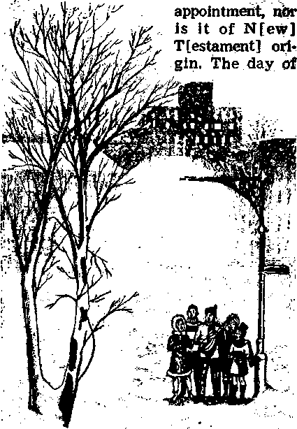

The Development of Christmas Music
Have you ever wondered when and how Christmas music had its start? Some peo-
The Musk of Christmas
PAGE 5 /
Balanced View of Air Travel
PAGE &
Your Appendix—What Is Its Value?
What Relativity Is
PAGE2O-
DECEMBER 22. 1969
THE REASON FOR THIS MAGAZINE
News sources that are able to keep you awake to the vital issues of our times must be unfettered by censorship and selfish interests. "Awakel" has no fetters. It recognizes facts, faces facts, is free to publish facts. It is not bound by political ties; it is unhampered by traditional creeds. This magazine keeps itself free, that it may speak freely to you. But it does not abuse its freedom. It maintains integrity to truth.
The viewpoint of "Awakel" is not narrow, but is international. “Awake!" has Its own correspondents in scores of nations. Its articles are read in many lands, in many languages, by millions of persons.
In every issue “Awake!" presents vita! topics on which you should be informed. It features penetrating articles on social conditions and offers sound counsel for meeting the problems of everyday life. Current news from every continent passes in quick review. Attention is focused on activities in the fields of government and commerce about which you should know. Straightforward discussions of religious issues alert you to matters of vital concern. Customs and people in many lands, the marvels of creation, practical sciences and points of human interest are all embraced in its coverage. "Awakel" provides wholesome, instructive reading for every member of the family.
"Awakel" pledges itself to righteous principles, to exposing hidden foes and subtle dangers, to championing freedom for all, to comforting mourners and strengthening those disheartened by the failures of a delinquent world, reflecting sure hope for the establishment of God's righteous new order in this generation.
Get acquainted with "Awakel” Keep awake by reading “Awakel"
Pitlt.ished Simultaneously in the United States by the WATCH! CAVER BIBLE AND TRACT SOCIETY OF NEW YORK, INC, 117 Adams Street Brooklyn, N.Y. 11201. U.S.A.
and in England by
WATCH TOWER BIBLE AND TRACT SOCIETY Watch Tower House. The Ridgeway N. H. Knorr, President
5,900,000
Average printing each issue: 5d o (AntralIt, 5c; South Africa, 3/scl
Tearly flibscriptlon rates
Offen for sem[Tncntlily editions
Canada, 150 Bridgeland Ave., Toronto 390, Ont, $1 EOflind, Watch Tower House,
New Zealand, 821 New North Rd., Auckland 3
South Africa, Prhate Bag 2, PA EbtHtefOBldn, Tn. 70e
(Monthly cast half the abtwe rates.)
Hewilttnnm for subscriptions should be wnt to the office tn your country. Otherwise send you? remittance to Brooklyn. Wotlaa #f expiration Lv sent at least two taues before subscription expires.
London N.W. 7, England
Gba^tt Suitsu, Secretary
Now published in 26 languages
Semimonthly— Afrikaans, Cebuano, Danish, Dutch, English, Finnish, French, German, Greek, Tloko, Italian, Japanese, Korean, Norwegian, Portuguese, Spanish, Swedish, Tagalog, Zulu.
Monthly—Chinese, Clnyanja, Hlligaynon, Malayalam, Polish, Tamil, T'krainlan,
CHANGES OF ADDRESS ihtiid reach thirty day* brfora yw mmrlnp date. Give u yn«r aid mA ttew add rm (If pastille, yavr eld address label). Write Watch Tower, Watch Tower He aw, The Ridgeway, London N.W. 7, Eniland-
Entered as second' elm* milter at Brooklyn, fi.I. Printed In England
The Bible translitkn ngilariy need In "Awakel" H the New World Translation «f the Holy Scriptures, 1961 edition. When olher transit tone are pted, thia I* dearly marked.
CONTENTS
|
When Your Stomach Acts Up |
3 |
What Relativity Is |
|
The Music of Christmas |
5 |
Fatigue and Noise |
|
Balanced View of Air Travel |
9 |
A Near Tragedy Produces Happy |
|
Rain or Shine |
12 |
Memories |
|
Your Appendix—What Is Its Value? |
13 |
Earthquakes |
|
“Your Word Is Truth” | ||
|
Mr. Porcupine |
16 |
God’s Spirit—A Remembrancer and |
|
Kola—Prized Nut of West Africa |
17 |
Teacher |
|
Lack of Fossil Record |
19 |
Watching the World |
EVERY day millions of persons complain of heartburn, or acid indigestion. In America, stomach sufferers pay about $100 million each year for antacids and alkalizers alone. Do you at times have trouble with your stomach? What do you do when your stomach kicks up a fuss? Do you reach for a tablet for fast relief, or do you try to cope with the cause?
Your stomach is a most dependable and agreeable organ if you treat it right. Rarely will it give you serious trouble if you are leading a happy, peaceful life. But it can give you a hard time if you are emotionally upset and tense; then it can become an acid-prone troublemaker.
A healthy stomach is an exceptionally tough organ. In it is an acid so powerful that a drop of it would blister your hand. Also present are protective substances so effective that very few things can penetrate the stomach walls, not even the acid. But emotions such as fear, anxiety, anger, or constant tension can disturb your digestive system. These emotions can cause an excessive secretion of stomach juices even when no food is present. This can greatly irritate the stomach and that part of the small intestine called the duodenum, located directly below the stomach’s outlet valve. If this condition is made worse by hastily eating coarse food, or by eating highly spiced foods, or extremely hot foods, or by smoking and excessive drinking of beverages that contain alcohol or caffeine, a person can develop not only an overly acid condition but ulcers.
But not all stomach distress is emotional. A virus or bacteria can cause the stomach to expel its contents. When a flu virus gets into the intestinal wall, diarrhea and vomiting may result. The body automatically tries to throw off the infected material.
Then, too, the stomach may not be to blame. For example, many people have mistaken angina pectoris for indigestion, or coronary thrombosis for a severe stomach upset. An appendicitis attack may at first be mistaken for a stomachache. A malfunctioning liver, pancreas, gallbladder or kidney may send out danger signals by telegraphing pain to the stomach. In these cases blaming the stomach could prove dangerous, because the stomach would not be at fault.
The average person today who complains of an acid stomach simply chews a few antacid tablets for quick relief. Doctors generally say that a few antacid tablets most likely will do the sufferer no real harm. However, nearly all physicians now avoid sodium bicarbonate. Time magazine for August 28, 1964, stated:
“Sodium bicarbonate is at once the commonest, cheapest, most misused and most dangerous antacid. In normal people, an occasional half-teaspoon in half a glass of water will probably do no harm, But a teaspoonful of bicarb in half a glass of water is enough to neutralize highly acid stomach contents, with some bicarb left over. The leftover can be dangerous, particularly to a person with an unsuspected kidney ailment. The excess bicarb is absorbed into the bloodstream through the walls of the small bowel, causing excessive alkalinity in the blood.'It is the kidneys’ job to remove this excess, but diseased kidneys may not be up to it, introducing the danger of death from alkalosis.”
Doctors still prescribe antacids but usually these are not ones that are absorbed into the bloodstream. A familiar form often suggested is milk of magnesia.
When their stomachs tend to act up, some persons eat foods simply prepared— for instance, baked potatoes instead of French-fried potatoes. They make simple meals instead of eating a great variety of different foods and rich desserts. They take small amounts and avoid second helpings. Others cut out acid foods or mildly acid citrus fruits and this seems to help them. Still others, instead of drinking black coffee, which actually stimulates an empty stomach to produce more acid, and may be irritating, add cream to their coffee, the cream acting as a buffer. Many physicians now say that the best neutralizer of excess stomach acid is food. Small meals about every three hours are said to work best of all.
Many Europeans use herbal bitters of various kinds. “We had success with stomach bitters when troubled,” said an American who traveled in Europe. The apostle Paul advised Timothy: “Use a little wine for the sake of your stomach and your frequent cases of sickness.”—1 Tim. 5:23.
An acid condition sometimes can be avoided if a person relaxes before eating. In fact, an acid condition often will improve if the patient eats slowly, drinks in moderation and avoids stress and tensions during mealtimes. Dr. Richard Doll, a British physician-statistician, said that peace of mind, bed rest and nonsmoking do some good when suffering with stomach ulcers. Science Digest, April 1965, made a similar statement, saying: “Adjusting personal problems at home or at work may alone bring about healing of a difficult ulcer.”
.Therefore, how wise are Bible principles that encourage Christians to put away tension-building emotions, such as wrath and anger, and encourage instead the practicing of qualities such as love, compassion, kindness, lowliness of mind and mildness, which produce healing in the human body! How reassuring the inspired commands that tell us always to “rejoice in the Lord,” to be moderate and reasonable in our habits, not to be anxious over anything, ‘but with prayer and supplication to let our petitions be made known to God and the peace of God will safeguard us*!—Phil. 4:4-7.
Living according to these high principles can result in good for the body. So why not- heed this sound Biblical advice for your own sake?
The Development of Christmas Music
Have you ever wondered when and how Christmas music had its start? Some peo-
ccflii night in December.
Through the gently fluttering isIKi^ffaices comes the cheerful sound of voices singing. There under the streetlamp is a group of persons heartily singing Christmas carols. Is this scene familiar to you? No doubt it is for many folks in North America and Europe. Yes, this is the time of the year when many persons of all ages enjoy singing the melodious music associated with Christmas.
In some homes, families gather around a piano or an organ to sing such favorites as “Silent Night! Holy Night!,” “Jingle Bells,” and others. In schools, churches and certain clubs, choruses enthusiastically practice their carol singing in preparation for special Christmas programs. From radios, television sets and stereo systems the lilting refrains of familiar carols pour out. In large department stores a background of Christmas music helps busy shoppers get the Iioliday spirit and motivates them to buy.
Secular and religious choral societies, as well as symphony orchestras in large communities, diligently prepare for special Christmas concerts. They rehearse certain musical works that, down through the years, have come to be associated with the Christmas festivities. Weeks in advance, the newspapers carry advertisements for these Christmas concerts. It is at this time of year that Handel’s Messiah, Berlioz’ L’Enfance du Christ and other musical works dealing with the earthly life of Jesus Christ are performed in concert halls and even in large churches. pie may think that it began with Jesus and his apostles, or among the early Christians.
Before we observe when Christmas music began, we need to learn about the origin of the holiday itself. Note this comment in M'Clintock and Strong’s Cyclopedia of Biblical, Theological, and Ecclesiastical Literatures .“The observance of Christmas
is not of divine
Christ’s birth cannot be ascertained from the N[ew] T[ estament], or, indeed, from any other source. The [early church] fathers of the first three centuries do not speak of any special observance of the nativity.”—Volume n, page 276.
Well, then, how did Christmas music develop? William Muir Auld in his book Christmas Traditions reports that at first there were only the church chants. But he goes on to say: ‘‘Through contact with the festive environments in which [Christmas] grew up, and into which it was afterwards to be carried, it was to become mundane and material, happy and merry, ruddy and lusty.” And just what were those festive environments in which it grew up? Auld notes that December 25 "was sandwiched . . . between two immensely popular folk festivals, the Saturnalia and the Kalends of January,” The Saturnalia was a pagan Roman festival that honored Saturn, the god of agriculture. The celebrants often gave themselves over to great excesses in their riotous celebration of it.
The Roman church, unable to abolish the customs connected with these pagan holidays, incorporated them into its observance of Christmas by giving them a Christian name. Thus, down through the years, various customs such as decorating homes, giving presents and singing carols became integral parts of this holiday.
In view of all this, it is not surprising to read, in Erik Routley’s book The English Carol, that a carol “began not as a pious religious gesture but as a dance.” The word “carol” meant to dance in a ring, and in twelfth-century France it denoted an amorous dance that hailed the coming of spring. It was associated with the May Day celebrations in western Europe. The book All About Christmas by M. R. Krythe notes: “In early religious rites, worshipers joined hands and danced in a circle, as they sang together.. . . After the pagan winter feast had merged with the Christian, the Latin and Teutonic peoples still danced around nativity scenes to songs set to dance tunes called Wiegenlieder in Germany; Noels in France; and carols in England.”
The Christmas music developed gradually over the years and by the fifteenth century Christmas carols came into their own. From this time on, certain traditional music became identified with Christmas, as well as that which was written later by religious leaders and composers,
Handel’s “Messiah"
Not Written for Christmas
Perhaps the most frequently performed choral work at Christmastime is G. F. Handel’s great oratorio Messiah. Because it is usually performed then, many think that Handel wrote It just for Christmas. However, biographies of Handel show that he composed Messiah because he was in need of money, and they show that the work was first performed in a foundling hospital in Dublin, Ireland, in April, not in December.
Interestingly, Jay Welch, in his notes accompanying a recording of Messiah, wrote: "That Messiah [that is, its lyrics] comes entirely from the Scriptures does not make it liturgical church music. Handel gave his sacred and secular subjects the same stylistic treatment; he dealt with them as a non-sectarian, . . . glorifying no ecclesiastical doctrine . . . Furthermore, he produced his oratorios in music halls, theaters and hospitals, even though churches Were available to him. This so infuriated the English clergy that they once tried to close Covent Garden, where Messiah was to be offered.” They felt that a religious work should never be performed in a playhouse. “With characteristic spunk, Impresario Handel bypassed them by changing the title to 'A Sacred Oratorio.’ ”
Some persons who appreciate serious music enjoy listening to this beautiful oratorio in which they hear many favorite Bible texts set to lovely melodies. The harmoniously rich texture of the parts written for chorus is indeed moving.
But, you may wonder, what about the Christmas carols the roots of which go back to medieval times?
What Do Christmas-Carol Lyrics Reflect?
In view of the origin of Christmas, the carols associated with it reflect the thinking of the medieval peoples who, because of not being taught the Bible, practiced pagan customs of their ancestors. As the book All About Christmas noted: ' “As many early people worshiped nature, it was natural that some carols were concerned with its aspects. One of these, ‘The Holly and the Ivy,’ is ... a struggle for supremacy between the ‘male’ holly and ‘female’ ivy; and the song may have come from the pagan dances between groups of boys and girls.” It also observes that this carol “is a blending of nature worship and Christianity.”
Erik Routley also notes that "a naturalistic mythology, running close to the region of fertility-cult. . . and absorbed into civilised custom, produces the carol of ‘The Holly and the Ivy’ that we know.”
Consider two carols in which tree worship is highlighted. The first is the popular “O Christmas Tree! O Christmas Tree!” As author Krythe of All About Christmas notes: “In it the eternal greenness of the tree is praised; and the idea of the evergreen as a symbol of immortality is stressed.” The second is “Deck the Halls with Boughs of Holly.” Do you know the meaning of the line “See the blazing yule before us”? This refers to the pagan custom of burning the Yule log. Writer Krythe observes that it is “associated with the Scandinavian worship of their mystic . . . ‘Tree of the Universe.’ ” It was the custom that after the log was dragged into the house from the forest each person would sit on it. They would sing a song to it and kiss it in the firm belief that the “household would be kept in safety until the next Yuletide” season. AU this was done before it was set ablaze.
This may sound like a quaint old custom, but Christians who want to have God’s approval seek to know his view on matters. Is God pleased to see intelligent humans attributing to a tree or a log that which he alone can accomplish? (Isa. 44: 14-20) Really, is not nature worship the venerating of “the creation rather than [Jehovah God] who created” all things? God declares nature worshipers to be “empty-headed in their reasonings” and in “a disapproved mental state.” So, with a desire to be pleasing to God, do you not agree that it would be wise to avoid singing songs that reflect any kind of nature worship?—Rom. 1:21, 25, 28; 2 Cor. 6: 14, 15.
Certain carols such as “We Three Kings of Orient Are” praise the star that led the so-called wise men (who were really astrologers) to the child Jesus. Its refrain reflects star worship, which began in ancient Babylon. The Christmas hymn called “Brightest and Best” is sung in many churches; yet it addresses itself to the “Star in the East,” and those singing it are worshiping the star. Routley, in commenting on the fact that it was once withheld from use because “it involved the worshipping of a star,” wrote: “Perhaps the truth is . . . that [the composer] was writing a carol. The carols are not afraid of astrology.”
How does God view astrology or the looking up into the heavens for omens about the future? He answers at Deuteronomy 18:12: “For everybody doing these things is something detestable to Jehovah.” Is it not an evidence of good judgment to avoid that which Jehovah God detests and condemns?—2 Cor. 6:17.
The question that now comes up is, Are the carols that deal with Jesus’ birth itself in accord with the Bible record? Look at the first stanza of “The First Noel.” There it says that poor shepherds were in the fields watching their sheep in a cold winter’s night, but the Bible does not say it was winter, and at night shepherds are not in the fields in Palestine in winter. The second stanza incorrectly claims that these shepherds looked up and saw the star that guided the wise men. William J. Reynolds in his book Christ and the Carols comments on the error in this carol, saying: “The star appeared to the Wise Men, not the shepherds. There is no biblical reference indicating that the shepherds mentioned in Luke 2 saw the star mentioned in Matthew 2.” Krythe, too, notes that this carol “is not exactly true to the Biblical account.”
If we analyze carefully the words of the carols “Angels, from the Realms of Glory,” “Hark! the Herald Angels Sing,” and “O Come, All Ye Faithful,” we note that the claim is made that Jesus is Almighty God. Is this what the Bible teaches? Jesus said: “The Father is greater than I am.” There is not a single verse in the inspired Bible record that says that Jesus is Almighty God or part of a Trinity. It shows him to be the Son of God.—John 14:28; Col. 1: 15, 16.
So what have we learned about Christmas carols? We have seen that they are filled with pagan ideas and customs. Also that they are Biblically inaccurate, and in many cases directly contradict what Jehovah has said in his Holy Word, the Bible. When a person who loves the truth realizes these things, the music of Christmas loses for him the appeal that it once may have had.
The Reasonable View of the Matter
There is no denying that by reason of their beautiful melodies Christmas carols play very much on man’s sentimental nature. They touch his deepest emotions. But is God pleased with praises that are mingled with pagan customs? Will he approve persons who join in songs that deny his supreme sovereignty? Could “Jehovah the God of truth" approve of sentiments that run counter to his Holy Word?—Ps. 31:5.
While the music may be ever so lovely, one cannot forget that the words are not easily divorced from it. Does not a familiar strain of a well-known song usually bring back its words to one’s mind? When enjoying some niusic at home, there is nothing wrong with any beautiful melody in itself, but if such music brings to your mind unscriptural thoughts or stirs memories of false religious festivities in which you used to share, is it wise to select this kind of music for relaxation?
A great wealth of music has been written, most of it having no connection with Christmas. So one who enjoys music and who wishes to please God can easily be selective. There are thousands of symphonies, concertos and sonatas for all kinds of instruments, songs and dances in great variety, and charming light classical music that can do so much to make an evening enjoyable. By choosing wisely one can avoid music that may prove to be detrimental to one’s efforts to make his mind over in harmony with the will of Jehovah God.
So if you earnestly seek to keep on “holding faith and a good conscience” toward Jehovah God, do that which will please him by wholeheartedly shunning what he disapproves.—1 Tim. 1:19.
By "Awake!" correspondent in Ireland
WHAT are your thoughts about air travel? Have you come to accept it as a normal way of travel, or do you fear it? Have you ever planned to make a trip by air, only to change your mind at the last minute? Why this fear? Could it be because of disaster reports in the press? If so, what about rail and road disasters?
A great multitude of people are using the airplane as a means of conveyance now—236 million in 1967. So there is a need to face up to this very common fear of flying, scrutinize the basis for such fear and then determine whether the airborne traveler is taking any greater risk than any other traveler.
On the debit side, you can read of the accounts in the press about air crashes. Courts of inquiry are commissioned to investigate, and eventually the findings are made public. Men and their mechanical inventions, you must agree, are far from perfect. In the assembly of a plane, one careless move might conceivably produce a weakness that might eventually spell disaster. Tht pilots, like anyone else, are subject to unexpected illness—even during flight. One might therefore conclude that there is every reason for anxious concern.
The Brighter Side
Before actually flying for the first time, a prospective air passenger might find a trip to an airport very enlightening. One of his first thoughts likely would concern the care and maintenance of the aircraft. Watching planes arriving and departing would suggest some pertinent questions. For example, as aircraft touch down, with consequent stress on wheels and tires, the observer might wonder whafr dangers lurk in this aspect of the matter. Blowouts and wheel damage have been known. So how can dangers of this kind be reduced? Note this statement in the Irish Times of April 18, 1967, following the uneventful landing of an aircraft after damaging one of the twin port wheels: “It should be noted that the undercarriage of the Viscount aircraft is stressed to ensure that a landing can be safely executed with one of the twinwheels on either side in operation.”
Each manufacturer of tires has his own visual telltale mark which, when it becomes visible, signals that it is time to change tires. On the average, this is about every 150 landings.
The metal and joints, particularly of the undercarriage, are subjected to terrific strain. The design and manufacture of the plane takes this into account. For detection of metal fatigue or invisible cracks or defects, ultrasonic and X-ray techniques are used. Metal fatigue was found, however, in part of an aircraft that crashed at Heathrow, London’s big airport, in July 1968. Nevertheless, exacting examinations hold such incidents to a minimum.
In the maintenance hangars there are sections for testing the aircraft’s power plant as well as its hydraulic, electrical and mechanical parts. There are also high-/ standard welding departments, laboratories and analysis teams. Nothing is taken for granted. Each component is checked, severely tested and assigned a ‘lifetime,’ that is, a definite period of usable life, after which it must be replaced, even though still functioning correctly.
A log is kept of all maintenance done on each plane. Thus, if some part needs replacing prior to the expiry of its ‘lifetime,’ a check can be quickly made to see if by chance some other factor or part is also involved. This check would reveal whether the fault is common to all aircraft using the same component, or if it were peculiar to one type. Should a crash occur through such a premature breakdown, other aircraft might also be grounded until thorough checks had been made. Accurate paper work is vital here.
In another section of the hangar we can see engines partially stripped down and tested. Testing equipment simulates actual flying conditions, for, once the aircraft is off the ground, it is not possible to get out and make adjustments. Further, the size of some parts would create considerable waste of time if they had to be fitted on the plane, then tested, and then taken out again for adjustment.
But what if an engine breaks down while in flight? you may wonder. Even if fluctuation in one of the engine pressure gauges is observed, the engine might well be shut off in order to prevent extensive and expensive damage. This happened in May 1968, when a jet with 135 passengers landed safely on three engines. Landing on three engines is by no means an unusual occurrence.
Emergency Equipment
Each aircraft has survival equipment all ready in event of an accident, and this, too, is serviced regularly. There are inflatable rafts supplied with provisions and rescue flares. Emergency chutes, kept in small containers, need to be in excellent condition, since extra vital seconds could mean the difference between life and death. When needed, it is self-inflated once a handle is pulled. Great responsibility, naturally, falls on the department caring for this feature of maintenance.
There is even special provision for babies. There are miniature covered rafts, designed to keep the baby safe from the elements, each with its own rope to prevent its drifting away. As the raft touches salt water, a special battery is activated and a light on top of the raft is switched on.
With respect to forced landings, whether on land or at sea, it should be kept in mind that aircraft personnel are rigidly trained as to procedure. So, then, rather than panic and foolishly decide for yourself what to do, it is much better to pay attention to emergency instructions, cooperating fully with the captain and his crew.
Thoughts of the pilot’s suffering from a stroke or a heart attack while in flight should not worry you unduly. The copilot stands ready for just such a situation, and is trained to handle the plane and safely bring it to its destination. Besides, all pilots have to undergo periodic medical checkups; and this even though they may be far below retirement age, which is relatively low.
Air Traffic Control
Sometimes the uninitiated get the idea that once the plane is airborne the pilot can adopt whatever route he wishes, and so there is danger of collision with other craft. But what about Air Traffic Control? This is the system that provides for coordination of the pilot, the starting airport and such other airports as are involved in his flight.
Prior to taking off, the pilot makes out his flight plan, showing his destination, the route he will follow, altitude, the fuel he will carry—not merely enough to get him there, but also a specified quantity above that. The plan is passed to A.T.C., and only when A.T.C. approves and gives permission may the flight actually commence. And the pilot must stick to the flight plan, making alterations during flight only as and when he has requested and received from A.T.C. permission to do so. Communication between the aircraft and A.T.C. is by VHF (very high frequency) radio.
Immediately after takeoff the pilot gets into the correct airway, much as a motorist follows a roadway. The airways, usually ten miies wide, are numbered, and the pilot prefers to remain inside the appropriate air corridor for the greatest measure of protection. If the pilot is flying from Dublin to London, he will not follow the direct line between these two airports. Rather, he will fly east along airway ‘blue 1’ until he reaches the Manchester area, then turn southeast along ‘amber 1’ to London, Were he to keep to ‘blue 1’ it would take him to Amsterdam, Salzburg and beyond. Each airway has its identifying color.
During flight, there are other helps for the pilot—a great variety of ground “fan” markers and radio beacons to keep him on the correct course. Much more accurate, however, and now in general use is V.O.R. (Visual Omnirange), a system that provides a radial bearing from the transmitter so that the pilot immediately knows which degree he is heading along. As long as the right number shows on his dial he knows he is on course. This method automatically takes into account any drift due to wind. Should the apparatus in the aircraft or on the ground malfunction, a warning flag appears on the pilot’s instrument panel and an alarm is sounded in the A.T.C. office.
• Look Beyond the Wedding Day.
• How the Chinese Welcome the New Year.
• Denizens of the Mountains.
—In the next issue.
Not only is direction vital, but so is altitude. The air corridors are many thousands of feet deep, each flight occupying 1,000 feet, called a flight level. Eastbound flights operate on odd-number levels and westbound on even-number levels. The altitude of the aircraft is measured by an altimeter.
The altimeter measures the pressure above the aircraft but is calibrated to show height above the ground. However, as the air pressure differs from place to place, the pilot must set his altimeter accurately. Faulty setting could be fatal, particularly when landing in an airport surrounded by hills. In such circumstances he must know his precise altitude. Above 27,000 feet, flight levels are deepened to 2,000 feet, in view of the fact that the lower pressure affects the altimeter’s accuracy.
To offset the variations in pressure, the pilot will set the standard pressure, 1013.2 millibars, while in flight, with the respective airports supplying the latest local pressures for takeoff or landing. The pilot will at these times reset his altimeter accordingly.
Coming In for the Landing
The next logical step in airflight experience is the landing. An incoming flight is expected at a certain time due to the advance notification of the flight plan, and is picked up on the radar screens while still some 60 to 80 miles off. If overdue, an alert can be raised, and this could save valuable time in the event of an accident. The plane is followed in on a variety of radars and finally, about five miles out, appears on the precision screen. This is divided into two parts, showing the angle of approach (the glide slope of 3 degrees) and position relative to the runway (localizer). The plane can be “talked down” on the Ground Controlled Approach or monitored on the Instrument Landing System for a so-called “blind landing.”’Strict regulations forbid aircraft to land if the ceiling of cloud is less than 200 feet and visibility is less than 800 meters.
Of course, while the regulations, the thorough maintenance and the provisions for emergency all point to a high standard of operation, the imperfect human element cannot be ignored. A crash landing, happily without loss of life, brought this report: “The crash followed the commander’s incorrect decision to continue the approach when visual guidance became obscured below critical height.” Fortunately for air passengers, very seldom do the circumstances arise that would justify such a report.
The Balanced View
Reputable airlines work hard to reduce the hazards of sky travel. It is, in fact, in their interest to set expert troubleshooters to work pinpointing every failure or near-failure and correcting basic weaknesses, however minor. One airline has preflight inspections, inspections of landing gear, tires and suchlike every 14.5 hours, with other inspections at longer periods, and complete overhaul of jet engines every 3,500 flying hours.
On the other hand, one must be conscious of some of the problems encountered when imperfect men employ imperfect products to maintain a flying schedule— however high the standard they set for themselves. Too, there is the human element as represented in the pilot. There are records of pilot error, even though they are exceptional.
In the final analysis flying can never be guaranteed as accident-free. But then, when compared with other modes of travel, air travel has proved itself to be the least dangerous. It is true that one who has not traveled this way may imagine the feeling of helplessness that might be anticipated when an aircraft develops trouble. The same feeling could also be expected were one a passenger on a derailed train or in a car that had just had a blowout of a front tire.
The true Christian under any and all circumstances where danger may be apprehended—even on the streets of our great cities—commends himself to God. Such a person does not expose himself unnecessarily or foolishly to danger. Nor does he go to the other extreme of imagining that his own home is a place of guaranteed safety.
♦ Automobile drivers quite often think that in rain or snow special care must be exercised because those are times of unusual danger, and that is true. Yet one insurance company reported that clear days and dry roads are the motorist’s greatest invitation to tragedy. Approximately 80 percent of the 52,200 highway deaths occurring in the United States in 1967 happened on clear days when the roads were dry.
No Function?
What is the function of the appendix? What many medical men have been saying about it calls to mind what they had been saying about the thymus gland for centuries: a vestigial organ. But within the last decade they have discovered that the thymus gland plays an indispensable role in building 14) the body’s immunity to disease. And it seems that the appendix has long been similarly maligned. The dictionary refers to it as an “atrophied organ”; medical works term it "an evolutionary left-over,” “a vestigial organ,” “a functionless organ,” and say that “it has no use whatever.”
Thus Dr. John Paul North, a director of the American College of Surgeons, is quoted in a popular magazine as saying that “as a preventive measure against appendicitis it is accepted medical practice for a surgeon to remove the appendix— even though it is not inflamed—in the course of performing other operations.” But as with attitudes toward the thymus gland, a change is gradually taking place. Thus the medical research team at the University of Minneapolis “is beginning to
tjrpHE Appendix, Often Removed, May I Be Next for Transplants.” Thus read the caption of a report on research taking place at the University of Minneapolis, as published in 77ie National Observer, July 29,1968, The report went on to say: “Not so long ago physicians removed appendixes incidentally during surgery performed mainly for reasons other than appendicitis. Now there’s talk of perhaps actually transplanting appendixes into some people.”
Just what is the appendix? What is its function? Why do people get appendicitis? What can and should be done about it?
The human appendix has been described as being one of man’s smallest organs and yet giving him the most trouble. In medical circles it is called the “vermiform” or “worm-shaped” appendix, for the human body has other appendixes.
One of the smallest? Yes, it may be as small as a third of an inch in diameter and only one inch long. The average length, however, is from two to four inches, although at times it may grow to nine inches. Most animals do not have an appendix. As for its location in man, it extends from the pouchlike forepart of the large intestine, known as the cecum, near the small intestine. So small, and yet it gives so much trouble! In fact, more patients enter hospitals for removal of their appendix than for any other abdominal operation.
__^-ENLARGED CROSS SECTION SHOWN BELOW

believe that the once-despised appendix may have a valuable role in fighting disease,” especially those of a malignant nature, and that the role of the appendix is particularly vital in the young. Also Dr. J. B. Murphy notes in the British Journal of Cancer, June 1968, that the appendix, the adenoids and the tonsils, are “set accumulations of man’s lymphocytes, and lymphoid tissue has been found to play a vital role in mice to the resistance of malignant tumors,” and that the same may well be true of man.
Similarly, the Journal of Chronic Diseases, October 1968, contained a report to the effect that men with Hodgkin’s disease had a significantly higher rate of past removal of the appendix than did men without this disease but of the same general circumstances. And Dr. J. R. McVay, in the Medical Tribune, August 6, 7, 1966, stated that “the appendix may be ideally situated to contact viruses and produce cells with greater efficiency than can ordinary lymphoid beds in the intestinal tract. If this be true, perhaps such effective cells developed in the appendix may find their way into the lymphoid beds in other, parts of the body, much as soldiers who receive training at a central station and are then sent out to various outposts Where they stand to meet invaders.” (Incidentally, something like this is what has been found to be the function of the thymus gland.)
That this theory is not without merit is apparent from what Dr. Sussdorf found in treating cancer patients with radiation. He discovered that shielding the appendix gave greater protection against radiation than the shielding of any other organ. He also found that by means of radioactive isotopes he was able to establish that “lymphoid cells in the shielded appendix migrate to the radiation-damaged spleen, repopulate that organ and manufacture antibodies there.”—Science News Letter, July 30, 1960.
Thus also Dr. H. R. Bierman found that of several hundred patients suffering from various malignant diseases, 84 percent had had their appendix removed some time in the past, whereas of those who did not have these diseases only 25 percent had their appendix removed. And he said: “Ironically, most of the patients in our study developed cancer after ‘routine’ removal of a perfectly healthy appendix.” —Science Digest, June 1966.
In view of these facts why do some surgeons still hold out for routine removal of the appendix? One reason may be that not all research has been unequivocal in this matter.
As to other functions of the appendix, there appears to be some basis for the position taken by so-called “nature” doctors that the appendix lubricates the large intestine and that removal of it tends to increase the problem of constipation. This seems to be borne out by the fact that an extract made from the appendix of hogs has been found useful in combating constipation and other digestive disturbances after the removal of the appendix. This may well be, since the appendix secretes a thick yellowish fluid of a pungent odor containing a mucus-like protein.
The Diagnostic Problem
When the appendix becomes inflamed it usually makes this fact known by sharp pains on the lower right side of the abdomen, accompanied with constipation or, at times, diarrhea. At times it is accompanied with nausea and vomiting. Some four centuries ago the condition was for the first time described in medical literature, and about two centuries ago the first appendectomy or operation for removal of the appendix was performed. However, modem understanding and treatment of it goes back only about eighty years. There has been no letup in the number of cases of appendicitis, although the fatalities from it have been greatly reduced. Still in the United States alone, some 2,000 die each year from ruptured appendixes and the complications that follow operations.
It is indeed a problem to know whether a patient has an inflamed appendix or not and how seriously it is inflamed. What appears to be appendicitis could just as well be an inflammation of the pelvic region, especially in the case of a female patient. And diagnosis is understandably also difficult in the case of the very young as well as in the case of the very old.
One of the indications of acute appendicitis is usually an increase of white corpuscles in the blood. Usually their count is from 5 to 10 thousand, and if these jump to from 12 to 20 thousand it is an indication that the body is mobilizing because of a serious infection, and so an operation may be necessary. However, at times the appendix may be inflamed and the blood count may be normal, even as at other times the blood count may be high and yet the appendix is normal. Then, again, the appendix may not be located in the usual place. All such factors tend to make diagnosis difficult.
Unnecessary Operations
Understandably, doctors differ on the need to operate. Thus in one hospital there were two teams of doctors, one proceeding conservatively, the other more liberally. The fatalities of both groups were the same, although the conservative group operated on only three out of five cases whereas the other group operated on four out of five. However, human nature being what it is, it is easy to see how some surgeons may be tempted to perform unnecessary operations. Thus the West Virginia Medical Journal, November 1955, stated; “We are convinced that removal of an occasional normal appendix may be justifiable, but we cannot condone the removal of as high as 50 percent normal appendixes as practiced by some surgeons.”
In fact, because of the tendency of some surgeons to operate rather freely without sufficient indication, hospitals have been required to have tissue committees. These check on the findings of the pathologist who is supposed to examine all tissues removed by surgeons to see if they were diseased or not, so as to pass on the quality of the surgeons’ work. This has proved to be a great deterrent to needless operations. However, there are records of pathologists working hand in glove with knife-happy surgeons and who report that the specimens are diseased when in fact they are not.
Of interest here is a report on four hospitals made by a director of the Johns Hopkins University Hospital as it appeared in Hospitals, March 16, 1962. It revealed that the hospital having the highest proportion of fatalities was also the one that had the highest number of unnecessary appendectomies. And the proportion of unnecessary operations was higher among private and semiprivate patients than among ward patients—those not so able to pay. The report also revealed that patients insured by Blue Cross had a larger proportion of unnecessary operations than those not so insured. Similarly, women had more unnecessary operations than men; and white persons had more unnecessary operations than did black persons.
However, an appendectomy that most likely was necessary was reported on in the New York Times, November 3, 1968. It told of a Russian doctor aboard a submarine who performed the operation on himself with the aid of a local anesthetic and two sailors. The submarine was submerged while the operation was being performed to ensure complete stillness. The operation was a success, Pravda reported.
Its Cause
As to the cause of appendicitis: while there are some who hold that no specific cause can be given, there seem to be at least a number of contributing factors. Some physicians hold that psychosomatic factors, such as excitement, grief, and so forth, bring on acute appendicitis, and others hold that exposure to cold may bring it on. However, the appendix being part of the alimentary canal, it is quite likely that one’s eating habits have something to do with it. Thus Boyd’s Pathology states:
“The disease is common in highly civilized countries and urban communities, but rare in remote rural districts and among primitive peoples. During the nine years that McCarrison practised medicine among the hill tribes of the Himalayas he never saw a case of appendicitis. Natives who live on a diet abundant in cellulose are immune from this disease, but when they adopt the diet of civilization they lose that immunity. These and many other similar facts suggest that the habits of life, and in particular modes of diet . . . are of importance in predisposing toward appendicitis.” From this it is apparent that highly refined foods, such as those made with white flour and white sugar, may well be the culprits.
Among other contributing factors are a sedentary occupation, with the resultant lack of exercise and chronic constipation, especially where there is a tendency to use harsh laxatives. But one thing that definitely does not cause appendicitis is the seed from such fruits as grapes, as was claimed in times past. Modern medical opinion has wholly discredited this idea, even as Dr. H. W. Hill expressed it: “I have not seen one grape seed in an appendix case. Most people eat grape seeds. They may get appendicitis, but they will not get it from eating grape seeds.”
Since there often is some doubt about the need of operating, recommended are the following: Rest in bed; not eating any food whatever; no laxatives of any kind; instead, the taking of an enema. The use of hot or cold compresses is recommended by some, and an ice pack to relieve the pain may be resorted to. The use of medication, such as antibiotics, is not recommended as a cure. However, in cases of persistent abdominal pain doctors recommend promptly seeking competent medical advice.
The evidence is accumulating as to the value of the appendix. No question about its being one of the body’s smallest organs and yet the one most likely to cause trouble. In view of how serious a ruptured appendix can be, with the likeliness of its causing peritonitis, which may prove fatal, it would seem that, when in doubt, the safe policy is to operate.
But here also the ancient adage applies, “An ounce of prevention is worth a pound of cure.” Are you engaged in a sedentary occupation? Then see to it that you get sufficient exercise. Also, consume a sufficient amount of natural foods, those with their cellulose still with them, such as whole wheat products and unpolished rice and, of course, plenty of fruits and vegetables. Just these two precautions may keep you from having an inflamed appendix.
Mr. Porcupine
• It has been determined that a porcupine is equipped with about 18,100 quills. He is atr interesting fellow—but from a distance.
By “Awake!’' correspondent in Sierra Leone
PRIZED NUT OF WEST AFRICA
IF YOU saw a visiting dignitary present a powerful African chief with the gift of a few nuts, you might be inclined to compare it to an ambassador offering a queen or president a bag of candy. But your comparison would be far from accurate. For these are not ordinary nuts. They are prized kola or cola nuts—the seed of a tree known to botanists as Cola acuminata.
Actually kola nuts do not look extraordinary. They are usually about one and a half to two inches across at the widest part and are shaped like horse chestnuts. Their color is either purplish red, pink or white. And rather than being a delectable treat as one might expect, they have an extremely bitter, quinine-like taste. But their fame is renowned in their habitat in the region of West Africa.
An analysis of the kola nut reveals that it has nearly all the constituents of coffee, tea and cocoa, plus others not possessed by them. Its caffeine content can be as high as 3.5 percent. This makes it popular with night workers, as it helps them keep awake. Kola contains theobromine and a glucoside heart stimulant. Thus it is possible to detect a quickening of the heartbeat after chewing one. One kola nut reportedly will enable girl dancers of Sierra Leone’s female Bundu Society to maintain the fast tempo throughout the night.
But in addition to being a stimulant, kola nuts have food value. Men working long
hours sustain themselves on kola nuts. In fact, many Africans eat hundreds of them a year. Interestingly, the kola nut has been called “a cup of coffee, a stick of chewing gum, a bar of chocolate, a stimulant, an aspirin tablet and a vitamin tablet—all rolled into one.”
The medicinal properties of kola have also long been appreciated. Sick people unable to keep food down are encouraged to munch one. They are
sometimes used with phenazone to treat migraine, and there are a number of other medicinal preparations using kola nuts.
Another use of kola is as a cosmetic. The nuts can also be used to make a brown dye for clothing. But, of course, perhaps the most familiar use is in making the many kinds of “cola” soft drinks. In view of their many remarkable properties, it is understandable why kola nuts can be purchased on the streets and in almost every market from Gambia to the Congo, as well as in countries in the interior of north and west Africa.
A Social Symbol
Even though kola nuts can be purchased quite cheaply, their use as a symbol of friendship make them a prized gift. Thus, they figure prominently on ceremonial Decasions as a mark of esteem for chiefs. Oaths also are sworn over a kola nut.
Among the people of West Africa, engagements, marriages and births seldom lack kola gifts. It has been a custom among the Creoles in Freetown, Sierra Leone, for a man to send a symbolic gift to his future bride. The engagement ring and a Bible are placed in a white calabash, a fruit that looks like a huge green tomato, but which is hollowed out and hardens to form a useful container. In a second calabash are placed some things the woman will need after her marriage—needle and thread, scissors, a piece of cloth and either seven or twenty-one kola nuts.
The African country of Mali imports great quantities of kola nuts, and there, too, engagements involve kola. A proposal of marriage from the boy’s family is accompanied by a gift of kola nuts. The number will be some multiple of one hundred, plus an extra one for the patriarch responsible for giving final consent. If the extra kola nut is not sent, the other kolas will be returned and the marriage is off. The acceptance of the kola nuts legally binds the agreement of marriage.
Also in relationships that do not have parental approval the use of the kola nut is employed. Among the Mossi people in Upper Volta, clandestine meetings are arranged during the girl’s visits to the market. Eventually the young man may send a friend, who informs the girl of his intentions. If there is a favorable response, she will receive a gift of four kolas together with some money. Thus the arrangement is sealed over kola nuts.
Employed in Speech
So prominent is the use of the kola nut in west Africa that it is employed in many colloquial expressions to indicate something of value or a gift. For example, there is the proverb: “With a good kola greeting, one will have good lodging.” This proverb from the Mende language of Sierra Leone needs no explaining. Also there is the Krio proverb: “Good word pull kola.” This means that your kind words will result in a gift.
Another way that kola is used in colloquial speech is in connection with a bribe or tribute money. It has been the practice in some countries for labor applicants to have some money ready to give to the employing agent as his “kola." Foremen have extorted “kola” from the men working under them. Also, men in position to grant big contracts will receive “kola,” that is, bribe money.
Involved in Superstitious Practices
In Sierra Leone cooking for the dead on the seventh and fortieth days is a well-established custom. When the meal is ready, dishes are set aside for the dead, and the widow takes one red and one white kola nut, each having two segments. The nuts are split into halves. Now, holding the four pieces in her hand, the widow speaks to her departed one, thinking that she can communicate with him. Then the kola is cast to the ground. If two, three or all four inside edges appear upward, the deceased is believed to have answered and accepted the gift of food. The pieces of the kola nut that show upward are shared by guests; the others are buried outside.
While this custom is very much in use, many people merely carry it out as a formality or to appease other relatives. Persons acquainted with God's Word the Bible realize that the dead are not conscious, and, therefore, cannot be communicated with, as Ecclesiastes 9:5, 10, says; “The dead, they are conscious of nothing at all . . . there is no work nor devising nor knowledge nor wisdom in Sheol, the place to which you are going.”
Another superstitious practice involving the use of kola is for a parent to take a delinquent child to the grave of a prominent relative and relate the child’s misdeeds. A gift of kola nuts is left in the hope that the relative will influence the child to change its bad habits. Also, requests are made of the dead for wealth, and kola nuts are often left on the grave as alms. Such acts, however, are quite out of harmony with the teachings of the Bible, which says: “There should not be found in you anyone who . . . consults a spirit medium or a professional foreteller of events or anyone who inquires of the dead. For everybody doing these things is something detestable to Jehovah.”—Deut. 18:10-12.
Important Export—Present and Past
Growing kola can be a sound investment. The trees grow abundantly in the coastal regions of West Africa. They have also been cultivated in the West Indies and in the tropical areas of South America and in Asia. A mature, fifty-foot tree will produce two crops each year for fifty years, yielding perhaps 120 pounds of nuts in a year.
In thousands of West African communities production of kola nuts has been built up to enormous heights. Large quantities of them are shipped to the United States and European countries, where kola is dried and used for making refreshing soft drinks. Kola nuts also are exported to countries in the interior of Africa such as Mali, Upper Volta and Niger. Nigeria alone sends kola nuts north by road and rail to the value of £10 million a year. And the Ivory Coast’s eight million kola trees produce an annual yield of 20,000 tons, worth £3 million.
For centuries caravans carried kola nuts from Kano in Nigeria, Sierra Leone and the Guinea highlands to the northern shores of the continent. The long-established caravan routes were still in existence by the end of the nineteenth century. At that time Freetown, Sierra Leone, was visited by Sudanese caravans bringing gold and gums, and a caravan of 5,000 people took back kola nuts in exchange. Thus, if it had not been for kola nuts, the caravan routes crisscrossing thousands of miles of North African desert might never have been established.
When the slave trade was abolished, the kola nut lost none of its popularity. It is still a prominent part of life in West Africa. For example, when Sierra Leone released twenty-five new postage stamps in December 1967, no fewer than eleven of them carried a picture of the kola tree’s green leaves and yellow flowers. Truly, the kola is a prized nut of West Africa!
19
♦ Evolutionists frequently have implied that the fossil record gives support to their theory. But this is not true. E. J. H. Corner, Professor of Tropical Botany, University of Cambridge, notes: “Most botanists look to the fossil record as the source of enlightenment. But with palms, as with all groups of flowering plants, no such help has been discovered. There are records to the mid-Mesozoic era, if not earlier, but they are all palms of recognizably modern respectability. There is no evidence of the ancestry of, even, existing genera.” Why not? Because, instead of being the result of evolution, the vegetation, in its various kinds, was created by God.—Gen. 1:1042.
IF YOU were in a rocket traveling through distant space, how would you tell your speed and direction?
On earth, there would be no problem. K an automobile travels sixty miles from one place to another in one hour, it has traveled at the speed of sixty miles an hour. We could even measure this distance if we had to prove it. So there is something definite to go by, the ground over which we have traveled. Also, the turning of the car’s wheels operates a speedometer that shows the speed at any given moment.
Airplanes, in addition to being able to observe the earth over which they pass, can use airspeed indicators to gauge their speed. These are based on air pressure and measure the rate of travel through the air at any particular time. And astronauts traveling to the moon can measure their speed relative to the earth, knowing the distance to the moon and how long it takes them to get there. Thus, as long as there is some familiar body in view, direction and rate of speed can be measured.
In Outer Space
But out beyond sight of the earth, moon, planets and sun, then what? Even an airspeed indicator would do no good, because there is no air in outer space!
So let us say that while in your rocket deep in space, you saw a meteoroid pass by your window. Would that mean it was traveling faster than you? You might quickly conclude, Yes. But wait! Might it be, instead, that you were stopped and it was passing you? Or was the meteoroid the one that was stopped and were you actually going backward? Or were you both going backward, but your backward rate was faster than that of the meteoroid? In fact, how would you really know what is backward or forward in outer space?
You can see the complications of trying to determine motion in space. There must be some familiar body with which a traveling object can be related. Hence, all motion in space is relative, that is, faster, slower, forward or backward in comparison to something else. This is the basis of the theory of relativity.
Theory of Special Relativity
Albert Einstein, in 1905, was the first to formulate this theory in a manner that could be studied by mathematical calculations and experiments. His theory included the main ideas that (1) all motion is relative, which means that the speed and direction of any object can be measured only in relation to another object; and (2) that the speed of light in a vacuum is an absolute value, that is, it travels about 186,000 miles a second and is independent of the motion of the light source.
Let us illustrate these two points. If you were riding in a train at 50 miles an hour and you threw a ball forward down the aisle at the speed of 20 miles an hour, how fast would the ball be traveling? In relation to you, and the passengers along the aisle, the ball is going 20 miles an hour.
But let us say there is a person standing along the railroad tracks outside and he is able to observe through the train’s windows the ball being thrown. How fast would the ball be traveling in relation to him? It would be going 70 miles an hour, since it would also include the train’s rate of travel. Thus, the ball’s speed is relative, depending upon who observes it.
However, with light it is very different. If you could speed up your train to 100,000 miles a second and then flash a beam of light forward down the aisle, how fast do you think that light would be traveling? Well, to you in the train, you would say 186,000 miles a second, since that is the speed of light. But how fast would it pass the bystander along the tracks? As in the case of the ball you threw, you might think that here, too, for the observer outside, you would have to add the train’s speed (100,000 miles a second in this case) to the speed of light (186,000 miles a second), resulting in a total speed of 286,000 miles a second.
But this does not hold true with light! It is an amazing phenomenon; no matter how fast your train was traveling, you could not speed up that light beam at all! It would travel past the bystander along the tracks at 186,000 miles a second, since it is not affected by the speed of its source. That speed of light represents the ultimate speed of anything scientists have observed in the universe, although there could be greater speeds unknown to them.
These two ideas, that all motion is relative, and that light’s speed is independent of the speed of its source, are basic to what is known as the Theory of Special Relativity.
Of course, the Theory of Special Relativity is far more complex than this discussion can indicate, as it defines the relationships between light, energy and matter. It made possible the calculations that resulted in the famous equation E=mc2, which was the basis of the atom bomb. The bomb’s explosion left little doubt as to the general validity of Einstein’s special relativity thepry.
General Relativity Theory
But what happens when there are changes in speed and direction? How is the motion of heavenly bodies influenced by the gravitational fields of other bodies? How is light affected when it passes a star or planet that has a strong gravitational field?
In 1916 Einstein formulated his General Relativity Theory. In it he included the possibilities for changes in speed and direction, particularly as they are due to the subtle influences of gravity.
Expressing this theory in the language of mathematics reveals its fantastic complexity. The book Aew Frontiers of Physics says it would require “a set of ten simultaneous differential equations, each of so fearful and wonderful a structure that a most compact and unfamiliar notation is required to render it suitable.” So if you find relativity a difficult subject, do not be surprised! The scientists do too!
According to his theory, Einstein was able to predict some other interesting things. One was the effect that gravity would have on natural time processes.
Gravity Slows Processes
When we speak of natural time processes, we mean particularly atomic “clocks,” the rhythmic, vibrating atoms that emit radiation at a steady, measurable rate. These atomic “clocks” are far more accurate than our mechanical ones.
The General Relativity Theory predicted that all natural time processes such as rhythmic radiations of atoms would’ be slower when on a larger, “heavier,” body. For example, an atom would radiate slower on the sun than it would on the earth, since the sun has a greater mass, or “weight.”
While proof of such a prediction is difficult to obtain, measurements of changes in the rate of atomic radiation from dense bodies have given some indication that Einstein’s conclusion was generally correct. Such processes on a planet or star with a greater mass, or “weight,” appear to be slower than on the earth, due to the greater force of gravity on the other bodies.
Another interesting conclusion drawn from this theory was that gravity could attract, or bend, a beam of light.
Bending a Light Beam
Einstein calculated that a beam of light would be deflected, or bent, by a strong gravitational field much the same as a particle of matter is attracted by gravity.
In order to obtain experimental proof for this, a major undertaking was needed. Two British astronomical expeditions photographed the position of a preselected star, each from a different point on earth. Then, from the same two positions, other photographs were taken of the same star as the sun came between the star and the earth. If the light from the star had been bent passing by the sun, it should be indicated by a change of position on the different photographs.
Mathematically, Einstein computed the bending at about 1.75 seconds of arc according to his theory. The two groups measured the shifts on the photographs. In one case it was 1.98 seconds of arc. The other group’s measurements came to 1.6 seconds. This was remarkably close to the prediction, close enough to verify his basic assumption.
Since gravity could affect a light beam, it posed an interesting possibility. In Relativity for the Layman, author J. Coleman stated: “It is interesting to speculate how massive a star would have to be so that its gravitational attraction is strong enough to prevent any of the star’s light from leaving the star. It can be shown that for a star of the same radius as the sun this would occur if its mass were approximately 400,000 times the sun’s mass. If such stars existed, we would never be able to see them, regardless of how close they were or how brilliantly they shone!”
Other interesting possibilities have resulted from the General Relativity Theory. It has shed light on different phenomena affecting the world we live in. But while scientists continue to use the mathematical formulas of the theory, it is not without its critics. This criticism has arisen mainly as a result of the fact that the formulas were developed to fit the facts that were found, rather than the formulas being derived from basic principles. What further refinements will be made in expressing the laws of the universe remains to be seen.
Yet, as theories are tested, proved, altered or rejected, one basic fact continues to come to the fore. It is the grand harmony of the universe. Einstein’s own comment was: “Modern physics is simpler than the old physics. . . . The simpler our picture of the external world and the more facts it embraces, the stronger it reflects in our minds the harmony of the universe.”
Indeed, in the later years of his life Einstein formulated his Unified Field Theory. This theory was expressed by a single set of physical laws that would include what takes place inside the atom as well as what takes place in outer space. It shows that the basic forces in the universe are not independent of one another, but are really inseparable. The universe and all its parts were seen as a unity. Of this Unified Field Theory, Lincoln Barnett stated in The Universe and Dr. Einstein: “So a profound simplicity supplants the surface complexity of nature. . . . Thus all man's perceptions of the world and all his abstract intuitions of reality merge finally into one, and the deep underlying unity of the universe is laid bare.”
The truly wise and humble person acknowledges where all this grandeur and harmony originated. It had to have a Designer and Maker, since nothing organized comes into being by accident. The ancient psalmist acknowledged the source when he said; “The heavens are declaring the glory of God.” And the apostle Paul also did when he stated: “Of course, every house is constructed by someone, but he that constructed all things is God.”—Ps. 19:1; Heb. 3:4.
FATIGUE AND NOISE
ON AN atmosphere of noise above the level of 50-60 decibels the human body is workIng under constant strain. The assault upon the eardrums creates a sense of tension; nerves become frayed and irritability increases. The pulse rate is affected and blood pressure rises. This strain of living and working in noisy surroundings prevents the body from relaxing, and the end of the day is reached in a state of great fatigue.
The fatigue that is caused by noise cuts down on working efficiency. Tests have shown that man often uses a fifth more energy to do a Job in noisy surroundings than he would use under peaceful conditions. Noise affects his judgment and power of concentration; part of the brain is occupying itself with sounds that it does not really want to hear.
These physical and mental effects are reflected in the efficiency with which one carries out his job. By cutting down the noise in one factory from 100 to 75 decibels, sound engineers reduced the accident rate by nearly half and stepped up output by a fifth. Noise abatement in a motor works brought down the consumption of headache pills by half. By putting a new bearing on a noisy ventilator a factory manager raised output by 12 percent.
A large United States insurance company got remarkable results by reducing office noises. A drop of eight decibels in the noise level cut down typists’ errors by almost a third and those of machine operators by a half. Job-changing was cut by 47 percent. The company estimated that by cutting down on noise it increased overall efficiency by 9 percent and saved fifty-eight dollars per employee during the first year.
The effect of "an unexpected or unwanted noise” was recently described by Dr. Samuel Rosen, a New York ear surgeon: “The pupils dilate, skin pales, mucous membranes dry, there are intestinal spasms, and the adrenals explode secretions,”
Decibels are sound units. The lowest audible sound is one decibel. About 80 decibels is the maximum comfortable level of sound. A jet plane at close range may emit 150 decibels. Heavy traffic produces about the tolerable limit of 80 decibels. But this may be punctuated by a woman shouting (90 decibels), a motorcycle (110 decibels), a siren (125 decibels) or a riveting gun (130 decibels). The honking automobiles, the screeching trains, the grinding machines, the chattering jackhammers have multiplied with the millions of new residents who have jammed into the world's cities. What has passed almost unnoticed is that many noise levels encountered in the community exceed the standards found in industry.
What can you do about it? You cannot reform the rest of the world. But you can help to make your own surroundings more peaceful by what you personally do.
rf HAPPENED
PRODUCES
in Ecuador
huge vehicle passed,
By Awake! correspondent
in Cuenca, Ecuador, on the afternoon of January 20, 1969. A loaded dump truck was backing into a narrow driveway along-, side an elementary school. One little girl of ten, possibly thinking the truck would pass her, remained in the driveway. As the rear wheels of the the little girl’s dress was caught, and horrified onlookers saw her dragged under the wheels.
Hearing screams, the driver stopped and got out to investigate. Imagine the shock to see the little girl crushed beneath his truck! He had stopped right on top of her! The only thing he could do was drive the truck forward again, the great weight again bearing down upon the injured parts. As it turned out, the wheels had passed over her left leg, then over her stomach. She was rushed immediately to the clinic, surprisingly still conscious.
When the anxious mother arrived by her side, what do you think were the first words her little daughter uttered? “Mother, I can’t die yet. I haven’t even conducted a Bible study!** And of her own accord the child was telling the nurses that no blood must be used in treating her. What? A badly injured little girl not wanting to die because she wants to teach someone the Bible? To those nurses it was just unbelievable!
A Respectful Doctor
When the doctor arrived he swiftly recommended an operation in order to find out just what damage had been done internally. The father of the child consented, but pointed out that the operation must be without blood. Never having performed such a serious operation without blood before, the doctor was shocked. However, the parents explained to him their
respect for God’s law relative to blood.
(Lev. 17:14; Acts 15:20) They begged the doctor to do all he could for the child, but leave upon them any responsibility for proceeding without blood.
The doctor undertook to do what he could. “Since I have my own religious beliefs and want others to respect them,” he said, “I will respect yours.”
Just before being wheeled into the operating room the child said to her father: “Don’t worry, daddy.” The hours dragged by—five of them—and during all this time of anxious waiting, what did the assembled group of relatives and wellwishers observe? The parents were calmly explaining to them that if the child should die they had the assurance of seeing her again in the resurrection. Surely an unforgettable scene!
The confidence of the parents impressed, not only the doctor, but also many of those who had assembled to learn the outcome of the operation. “I am a father too,” said one, "but you show more calmness over this than I could ever show.”
Said another: “If I could have the faith like these people do, I would be the happiest man alive.”
A next-door neighbor, recently widowed, came to comfort the parents, but as she left she herself testified: “For the two years since my husband’s death I have been depressed; but seeing you and your faith in God and the hope you have has enabled me to find happiness for the first time.”
And After the Operation . . .
Now came the time for the doctor’s report. No bones had been broken, but very serious internal damage had been done to organs. The main artery to the diaphragm had been cut and more than half the child’s blood had been lost. But by the time the operation got under way the artery had already stopped bleeding, coagulation having stemmed the flow. An artery had been severed only four inches from the heart, and yet the girl did not bleed to death! The surgeon just could not understand why.
The liver had also been split. And, due to the tremendous pressure, the stomach had been forced right through the diaphragm, rupturing it in two places. This in turn had collapsed and torn the left lung, while at the same time the pericardium surrounding the heart had been broken. In other words, the truck had stopped just short of bursting the heart —an eventuality that would have been instantly fatal.
The doctor expressed satisfaction at how the operation had gone. He also appreciated the calm attitude of the parents —no uncontrolled screaming or crying to unnerve him. He was able to undertake the delicate job in a much more steady frame of mind.
But there was still danger. What about the blood loss? And what about the danger from infection? Either one could prove fatal. During the long operation every inch of the intestines had to be examined for breaks. Also, there had to be a thorough examination of any organs that might have been affected. One could still see the effects of the great pressure that the child’s body had undergone—tiny blood vessels had burst on the side of the neck and in the eye.
Next morning Mimi (that’s her nickname) was awake, quite clear in mind and surprisingly without complaint of pain from the aftereffects of the operation. The dangerous forty-eight-hour period passed and still no sign of infection. The whole staff of the clinic were astonished at how the little girl had survived the operation without blood transfusion and was now swiftly getting back to normal only five days after the ordeal.
One week after the accident, Mimi was released from the clinic and went on making fine progress. Then, a very serious complication showed up. Some type of liquid was forming around the heart, possibly due to the rupture irr-its surrounding, protective membrane. What might happen now? It was surely an anxious time. If the liquid did not dissipate naturally, the child might well have to undergo another critical operation, involving the heart.
Next day a heart specialist examined Mimi. Neither he nor her own doctor could hide their surprise. During the night the liquid had cleared up, and everything was functioning normally.
Five and a half weeks after the accident, Mimi was back in school playing with all her little friends, the injured organs healed, and no evident effects of the terrible experience.
Pleasant Memories
How could a near-tragic happening produce pleasant memories? Listen! “I was surprised at my own reaction,” said the father. “I did not know I could take such shocking news without breaking down. But right away I knew that Jehovah was fully aware of our needs. So, whether Mimi lived or died, just knowing of God’s kindly oversight of all things gave me a calmness I have never before experienced. We have read how Jehovah strengthens his servants when under trial. Now I know he does.”
And here is what the mother said: “When I first saw my child lying there I just went cold all over. But the next moment something very warm came over me as I thought about our complete dependence on Jehovah for everything. Jehovah’s spirit certainly does give strength and fortitude.”
And what about the surgeon? This had been the most critical operation ever performed at the clinic, and it had been successful without blood. Said the doctor: “I have learned something from this experience.” What did he learn?
Shortly afterward a university student had tp be operated on for appendicitis. When it was suggested that a blood transfusion was in order, this same doctor refused, saying: "Since January I have learned that it is much better not to use transfusions,” The appendicitis patient was back in classes soon after, and was doing fine.
The overseer of the local congregation of Jehovah’s witnesses, himself a North American, was deeply impressed too. “I was struck,” he said, "by the difference in the handling of such an emergency here as compared to what may be expected in the United States or other such countries. There were no screaming headlines in the press like ‘CULT’S BELIEF MAY COST CHILD’S LIFE.’ Rather, the radio report spoke of the outstanding faith and the tranquillity of this family under trial. Instead of robbing the parents of their right to determine what kind of treatment would be given the injured child, and doing so with high-handed court orders, the surgeon showed proper respect for the position of the parents and their conscientious beliefs.”
One prominent doctor declared: “You ought to know that this case is referred to as a real miracle among men of the medical circle.” Scores of booklets explaining God’s law regarding blood were placed, many of them with doctors who wanted to have more information on such a vital subject.
Finally, Mimi herself said: “I thank Jehovah for helping me, because if I had died then many people would have thought that it was from not taking a transfusion. But now, many will know that it is best always to obey God’s law, even under critical conditions.”
EARTHQUAKES
♦ In an average year, there may be as many as 1,000,000 earthquakes. But most of these are relatively minor and not noticed at all, except on delicate measuring instruments. However, the energy that is released by a large earthquake can be compared to about 10,000 toes the energy in the first atomic bomb, or about 200,000,000 tons of TNT.
THE holy spirit functions both as a remembrancer and a teacher. Said Jesus to his disciples: "The helper, the holy spirit, which the Father will send in my name, that one will teach you all things and bring back to your minds all the things I told you.”—John 14:26.
During the three and a half years of his earthly ministry, Jesus trained his apostles to continue the work he had started. As imperfect humans, they could not possibly remember every detail of his teaching. But Jesus’ promise indicated that God’s spirit would teach them whatever they needed to know to accomplish their ministry. Particularly would it open up to their understanding what they had previously heard but not understood. As a remembrancer, the holy spirit would bring back to their minds things that Jesus had said while with them. And, as a teacher, it would show them the correct application of his words.—See John 2:19-22.
When brought before public assemblies, kings and men in high governmental station, Jesus’ disciples could confidently rely on God’s spirit as a remembrancer and teacher. Like a friend, it would bring back to their minds things to say and help them to make appropriate applications. This would result in giving a good witness and also would silence opposers. (Matt. 10: 18-20; Luke 12:11, 12; 21:13-15) Therefore, Peter and John were able to speak boldly when questioned by the highest Jewish court, the Sanhedrin, about their having healed a man lame from birth. Their outspokenness was something completely unexpected from unlettered and ordinary men. It caused the members of the Sanhedrin to wonder. And Peter’s words, coupled with the presence of the cured man, left these learned men with nothing to say in rebuttal.—Acts 4:5-14.
However, although God’s spirit served as a remembrancer and teacher in behalf of individual Christians, it did not instruct each one separately in matters of doctrine and organizational procedure. But the operation of God’s spirit on the apostles and other mature men of the Jerusalem congregation made it possible to provide the teaching of the holy spirit, often in written form, for the edification and instruction of all.
A case in point is the manner in which the question about circumcision was handled. When some contended that non-Jews should be circumcised and commanded to obey the Mosaic law, those associated with the Antioch congregation did not wait for a personal revelation from God. Rather, in order to get the right viewpoint, they sent Paul and Barnabas to Jerusalem, to the governing body of the early Christian congregation composed of the apostles and other mature men.—Acts 15:1, 2.
At a meeting presided over by the disciple James, the matter was thoroughly discussed. After considerable disputing, Peter pointed out that the first non-Jews to whom he preached received the holy spirit while in the uncircumcised state. Then Paul and Barnabas related “the many signs and portents that God did through them among the nations.” (Acts 15:7-12) It is noteworthy that all three men had acted under the direction of the holy spirit when preaching to Gentiles, Peter even being taught by means of a vision that it was proper to do so. Therefore God’s spirit was actually teaching that uncircumcised persons could become a people for God’s name. —Acts 10:9-48; 13:2-4.
The disciple James recognized in this the unmistakable leading of God’s holy spirit and also a fulfillment of prophecy. Said he: “Brothers, hear me. Symeon has related thoroughly how God for the first time turned his attention to the nations to take out of them a people for his name. And with this the words of the Prophets agree, just as it is written, ‘After these things I shall return and rebuild the booth of David that is fallen down; and I shall rebuild its ruins and erect it again, in order that those who remain of the men may earnestly seek Jehovah, together with people of all the nations, people who are called by my name, says Jehovah, who is doing these things, known from of old? ” —Acts 15:13-18; compare Amos 9:11, 12, LXX.
The prophecy concerning persons from the nations becoming God’s name people had been recorded under inspiration of the holy spirit. And God’s spirit helped James to recall this prophecy and to understand its application. Consequently, the decision of James, that circumcision was unnecessary for Gentile Christians, agreed with the teaching of God’s spirit.—Acts 15: 19, 20.
Appropriately the letter containing the decision stated: “For the holy spirit and we ourselves have favored adding no further burden to you, except these necessary things, to keep yourselves free from things sacrificed to idols and from blood and from things strangled and from fornication.” (Acts 15:28, 29) Adherence to what the holy spirit taught, as set forth by the governing body, strengthened the congregations in faith and brought increase.—Acts 16:4, 5.
Since all pf God’s Word was written under inspiration (2 Tim. 3:16), it alone contains the spirit’s teaching. This rules out all teaching that conflicts with God’s Word. It was with reference to false teachers, as the context clearly shows, that the apostle John wrote; “You do not need anyone to be teaching you; but, as the anointing from him is teaching you about all things, and is true and is no lie, and just as it has taught you, remain in union with him.”—1 John 2:27.
Those first-century Christians had been anointed with God’s spirit. They had come to know both Jehovah God and his Son Christ Jesus. They were fully acquainted with God’s truth. So they did not need persons as teachers who denied the Father and the Son. Such teachers would only mislead them from what they knew to be the truth as taught by God’s spirit and plainly set forth in the Sacred Writings.—1 John 2:18-26.
Likewise, Jehovah’s servants today do not need instruction from persons who deny God and his Word and thus oppose what the holy spirit teaches. Knowing the truth, they do not waste time delving into the writings of godless men that are designed to destroy faith. But, as first-century Christians were strengthened in faith by letters from the governing body or members thereof, so also today Jehovah’s witnesses are built up by Bible-study aids published by the Watch Tower Society and which contain the teaching of the holy spirit as found in the Sacred Scriptures. Individually, also, they can rest assured that God’s spirit will bring back to their minds Bible truths and their correct application so that they can make a defense before everyone demanding a reason for their hope. Truly God’s spirit continues to be a remembrancer and a teacher for his people.
Pacific’s "Peace” Assemblies
<$> There were 64,715 of Jehovah's witnesses and persons of interest who crowded into two large stadiums in Manila, Philippine Republic, to hear N. H. Knorr, president of the Watch Tower Society, lecture on “The Approaching Peace of a Thousand Years.” This was the climax to the "Peace on Earth” assembly held there from October 22 to 26 in eight languages. Baptism services saw 1,835 persons immersed in symbol of their dedication to God.
Delegates from 31 nations converged on Port Moresby, Papua, for the first international assembly of Jehovah’s witnesses to be held in that land. A new town was built in the bush for this purpose. The convention program in three languages was conducted from a single platform. A crowd of 1,116 heard the public lecture.
At Melbourne, Australia, the “Peace on Earth” convention was attended by 25,837. A large number, 1,315, were baptized. Television coverage was extensive and forty column feet of publicity appeared in Melbourne city papers.
In Auckland, New Zealand, the twenty-first in the series of twenty-five “Peace on Earth” assemblies was held. There, 8,400 heard N. H. Knorr deliver the public address “The Road Back to Peace in Paradise.” The baptism of 421 new ministers was publicized nationwide by news media.
The “Muscle Cars”
Automobile manufacturers have been emphasizing style changes and horsepower. Now they are promising buyers what they call the “muscle cars.” These cars appeal mainly to young thrill seekers. Detroit engineers assert the cars are not a hazard because they can go faster in passing other cars and because they have improved brakes. Since speeding is a major cause of accidents, will a car capable of going 150 miles an hour improve matters? Insurance companies are quick to point out that such cars in the hands of youth do not promise greater safety. Last year alone, the epidemic on the highways took 53,000 lives in the United States.
U.N. “Drowning”
•$> The United Nations’ credibility is wasting away and public confidence is eroded, warned Canada’s External Affairs Minister Mitchell Sharp in a policy speech before the U.N, General Assembly. Sharp said that the 126-member United Nations is in danger of “drowning in a sea of words.” If this is not remedied, he said, the world body will become a “side show on the international scene, its activities brushed aside as irrelevant.”
Seminary "Shock Treatment”
<*> Presbyterian theologian John R. Bodo says that young men who decide to enter seminaries “should have shockproof faith.” “Seminaries used to be like hothouses,” he said, “where the tender plant of a young man’s faith would be nurtured until it was vigorous enough to survive in the treacherous climate of the world. This is no longer so.” In many of today's seminaries, he adds, young men find themselves "surrounded by students who perceive the gospel solely in terms of ‘action' in the world.” “Any discipline of individual devotions is strictly for oddballs,” says Bodo. The result, he concludes, is that unless a ministerial student is “already deeply committed to the God whom Jesus called father,” his faith is “not likely to survive this shock treatment.”
711,670 Earthquakes
■$> A published United Press International report stated that in four years since the mountain village of Matsushiro, Japan, first began to shake, seismologists have recorded 711,670 earthquakes, none of them strong enough to cause major damage. But the scientists say the total energy released by the tremors is equivalent to two atom bombs of the type dropped on Hiroshima.
Is Science the Answer?
< Science News for October 18 says: "Science is a body of knowledge which has been estimated to be the equivalent of some 10,000,000 books on science and its applications. More important, this body of knowledge is increasing at a rate estimated to be about 1,000,000 book equivalents a year, or on the order of 100 books an hour.” This torrent of information is increasing and changing so rapidly that no curriculum reform can possibly keep up with it. Despite all of this learning, never before was earth’s atmosphere so polluted, the rivers so filthy, the land so misused, the hospitals so filled with the sick and mankind so hopeless. It is the right knowledge of God and his remedy for man’s ills that mankind needs.
Sex Taboos Tumbling
® A discussion between a group of mothers reflects a deep conflict of values about sex. One mother said: “In the old days, self-control was a virtue. Now it is a vice. ‘Chaste makes waste,' says my 19-year-old daughter. ‘Chastity has no more value than malnutrition,’ My college sophomore believes that it is all right to have sex without marriage, provided there is mutual love. Her older brother, a college senior, is more ‘advanced.’ He believes that It is all right to have sex without love, as long as there is mutual enjoyment. ‘Sex with love is fine,’ he explained, ‘but sex without love is better than nothing.’ ” College girls who want to stay virgins find it hard to hold the line. Those who are serious about “saving themselves for marriage" may find themselves socially isolated. Said Dr. Haim G. Ginott: “Under such pressures, a virgin may start doubting her normality. In the face of temptation and ridicule, only the determined can maintain their standards.’’ With the prevalence of so many demoralizing views, Christians see the need to choose carefully their associates so as to maintain Christian chastity.
Pope and the Pill
The question was raised whether the Vatican is financially interested In pharmaceutical houses that manufacture birth-control pills condemned by Pope Paul VI. The reply in Parade, October 12, stated: "The Vatican has a financial interest in the Istituto Farma-cologico Serono which manufactures the pill. The president of the institute is Prince Giulio Pacelli, nephew of Pope Pius XII.’’
Beware, Glue Sniffers
<$> Sniffing airplane glue, or gasoline, or other toxic vapors is a very dangerous fad among the young. Solvents in the glue, lighter fluid, paint thinner dr other products can result in permanent damage to the nervous system and the liver. In a single massive dose they can kill. A spokesman for Dayton State Hospital said that "glue-sniffing is one of the most insidious” practices known today. Chemical companies have been studying ways to discourage it. One glue manufacturer plans to add essence of horseradish to the glue. The glue’s effectiveness will not be impaired, but the sniffer will be met with watering eyes i and sneezing spells.
Religion in Russia
<^> According to a published Associated Press dispatch, six Soviet citizens have asked Pope Paul VI, the Protestant World Council of Churches and Metropolitan Athenagoras of the Greek Orthodox Church to intervene with the Soviet government in an effort to bring about “normalization of religious life in the U.S.S.R.” The letters which were circulated unofficially in Moscow, charged that Soviet authorities had “forcibly” closed down 10,000 churches, five seminaries and 80 monasteries between 1959 and 1964.
Was She Cured ?
<$> Mrs. Josephine Deans, sixty, who had been bedridden for most of the last twelve years, was taken to the O’Keefe/ Centre by ambulance and, after listening to faith healer Kathryn Kuhlman, she rose from her stretcher and walked to the stage. She pronounced herself cured and said it was a miracle performed by God. Mrs. Deans died on October 6, two months later, at the Wellesley Hospital.
Rise fn Illiteracy
After a study of more than ninety countries. United Nations officials have concluded that the number of illiterates in the world has risen to about 800 million, an increase of almost 60 million in this decade. Calling the situation critical, the head of UNESCO's literacy Division, John C. Cairns, said: "It’s hard to envisage much significant human development among the masses of people who remain illiterate.”
Air Pollution Grows
<$> Despite the public clamor for cleaner air, America’s air becomes steadily more contaminated. Air pollution sources are now hurling more than 140 million tons of contaminants into the atmosphere every year, by government estimates. Two years ago it was 130 million tons.
Why the Skepticism?
<$> Many place the blame for youthful skepticism at the doorstep of the clergy. Is this blame justified? The Oregonian published the following report: "The revolting ministers In my own state have within the past few years organized dancing clubs for practicing homosexuals. . . . Elsewhere, the mod ministers have sneered at the virgin birth, . . . Others set up rock combos instead of choirs and frug their way through swinging services right in front of the altar.” If such conduct is meant to inspire faith in God, the empty church pews are the answer.
Giant Microscope
A three-million-volt electronic microscope at Toulouse, France, is the world’s most powerful. Gaston Dupouy, director of the Government’s Electronic Optic Laboratory, stated: “A new generation of electronic microscopes has just been born. We are convinced it will permit us to travel a new and fruitful stage toward the knowledge of the world of the infinitely small.” It is said that the microscope will enable researchers for the first time to examine molecules clearly in three dimensions.
Earmuffs on Elephants
<$> The zoo in Windsor Safari Park is only a few minutes from London’s Heathrow airport. The first time four elephants from Thailand heard a jet airplane, they stampeded through park fences. "They are young elephants and panicked with the noise. It took us a whole day to round them up using men and trucks,” said Ronald Smart, director of the zoo. "We had to do something to shut out the noise while they settled in and we hit on the idea of earmuffs." So the elephants marching about in earmuffs are not cold, but endeavoring to get used to civilization.
Cheerful Honesty
0- Some 350 families of Jehovah’s witnesses camped eight days at Lake Jacomo while attending a convention in Kansas City this year. Charles A. Kerr, historical curator for the park department, said three campers left early and were not present when the park ranger came to collect the $l-a-day fees charged. But one day letters arrived at the park department from Lake Geneva, Wisconsin, and from Brighton, Colorado. They contained the $3 camping fees. “Such honesty is refreshing,” Kerr said.
The Crime Wave
<$■ Mirror Magazine (London), November 1, said: “The amount of recorded crime has increased by 1,300 percent since the beginning of this century. The population has increased by 47 percent. More than half the people who get a parking ticket in London never pay the fine. Some criminologists believe that crime reported to the police represents only about 15 percent of offences committed.” Shoplifting accounts for a large number of crimes. In the United States one out of ten customers secretly followed into a large Manhattan department store stole something before leaving, a recent study revealed.
“No. 1 Health Problem”
& Alcoholism is America's No. 1 health problem, according to Dr. Roger O. Egeberg, Assistant Secretary for Health and Scientific Affairs. Dr. Egeberg said that “between six and seven million [Americans] are alcoholic victims” and added that “millions more— their families—are affected.”
Is it possible in today’s world of diversified interests? with the “communication gap’’ constantly widening? with the contemporary family structure viewed as “doomed,” a “massive failure”?
Yes! Thousands of families are finding the way. They have found a common meeting ground, the Bible!
Build your family life securely.
Read God’s Word the Holy Bible daily. Read it with understanding.
New World Translation of the Holy Scriptures
This modern version and the amazingly successful Bible-study aid (over 16 million copies) The Truth That Leads to Eternal Life, both for only 10/9 (for Australia, $1.25; for South Africa, 88c). Send today.
WATCH TOWER
THE RIDGEWAY
LONDON N.W. 7
Please send me the Neto World Translation of the Holy Scriptures and the hardbound, pocketsize book The Truth That Leads to Eternal Life. I am enclosing 10/9 (for Australia, $1.25; for South Africa, 88c).
Street and Number
Name ....................................................................................... or Route and Box ............................................................
Post Postal
Town ................................................ District No............. County ............................................
Last year over 120,000 persons were baptized in symbol of their dedication to Jehovah God, determined henceforth to be preachers of the “good news.” Even now, thousands more are preparing themselves, through study with Jehovah’s witnesses, in anticipation of qualifying for this important and rewarding activity.
Why is this so significant?
There are many reasons, but certainly not the least is to be found in the comparison of this keen interest in serving God with the prospects that the churches of Christendom have for their future in officiating ministers and priests. A leading news magazine reported: “Ministers by the thousands are leaving the church entirely.” And the dean of one theological seminary said the number of students preparing for the ministry “has dropped to so low a level that the situation is critical with no sign whatever of improvement.”
Why this amazing contrast?
The answer is contained in the thrilling annual report of the worldwide preaching activity of Jehovah’s witnesses. Read it. You will be spiritually stimulated and rewarded.
1970 YEARBOOK OF JEHOVAH’S WITNESSES.
Sent postpaid for only 4/3 (for Australia, 50c; for South Africa, 35c). Send also for the 1970 calendar, beautifully illustrating this theme of dedication and baptism in the early congregation in the days of Jesus’ apostles. Only 2/3 (for Australia, 25c; for South Africa, 18c).
WATCH TOWER THE RIDGEWAY LONDON N.W. 7
I am enclosing ..................... Please send me [ J 1B70 Yearbook of Jehovah's Witnesses (each, 4/3
[tor Australia. 50c; for South Africa, 35c]); 1STO calendar (each, 2/3 [for Australia, 25c; for South Africa, 18c]).
Street and Number
Name .................................................................................. or Route and Box ..........................................................
Post Postal
Town ............................................................................ District No, ............ County..........................................
In: AUSTRALIA: 11 Beresford Rd., Strathfield, N.S.W. CANADA: 150 Bridgeland Ave., Toronto 390, Ont. SOUTH AFRICA: Private Bag 3, P.O. Elandsfontefn, Transvaal, UNITED STATES: 117 Adams St., Brooklyn, N.Y. 11 SOL
32
AWAKE!